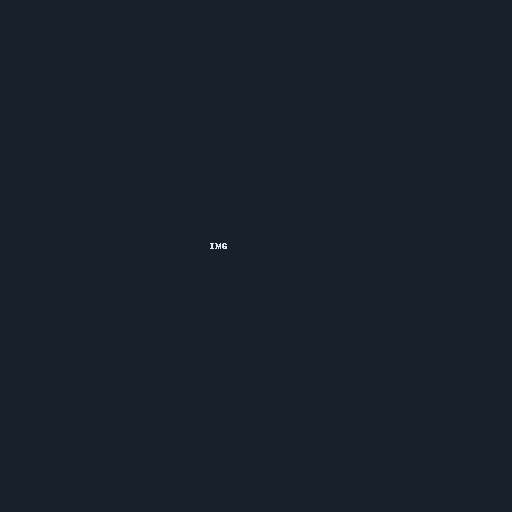

Amber Pyro Bow
Game: Genshin Impact
Skill: Explosive puppet that taunts foes. Burst: rains flaming arrows over an area.
Guide source: KeqingMains — Amber guide
Talents & Abilities
- Normal Attack: Summary of hits, charged/plunging behavior.
- Elemental Skill: Detailed effect, ICD, snapshotting, special gimmicks.
- Elemental Burst: Duration, AoE, energy cost, key interactions.
- Passives: Ascension passives and what they change.
Artifacts (Recommended)
- Sets: Primary 4pc set; 2pc+2pc alternatives.
- Main Stats: Sands / Goblet / Circlet.
- Substats: Priority order.
Weapons
- Best-in-slot: …
- F2P options: …
Teams
- Core comps: …
- Alternatives: …
Rotation Tips
- Skill → swap → Burst windows, funneling, snapshotting.